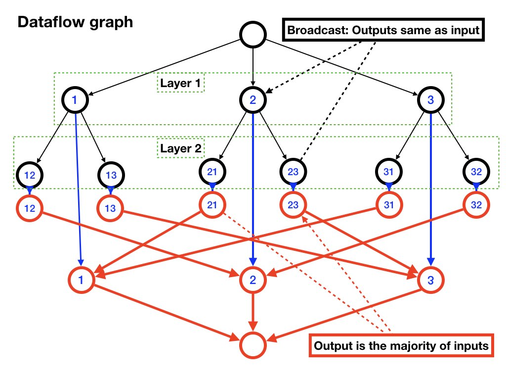
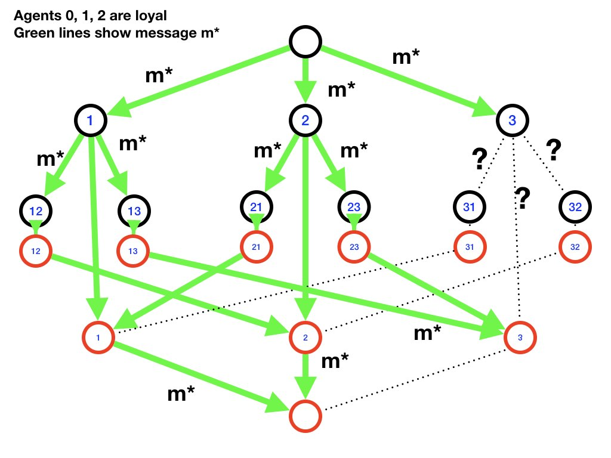
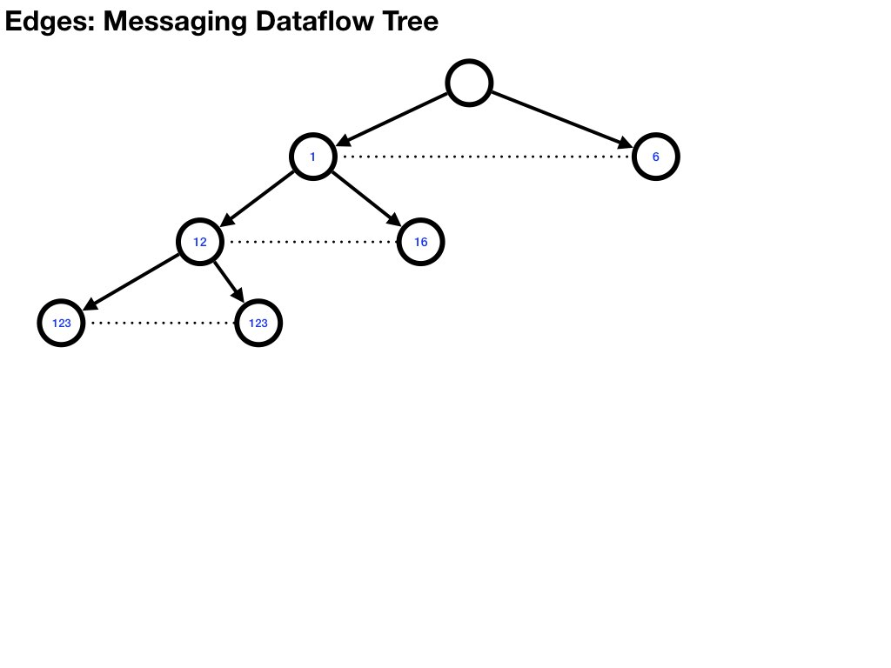
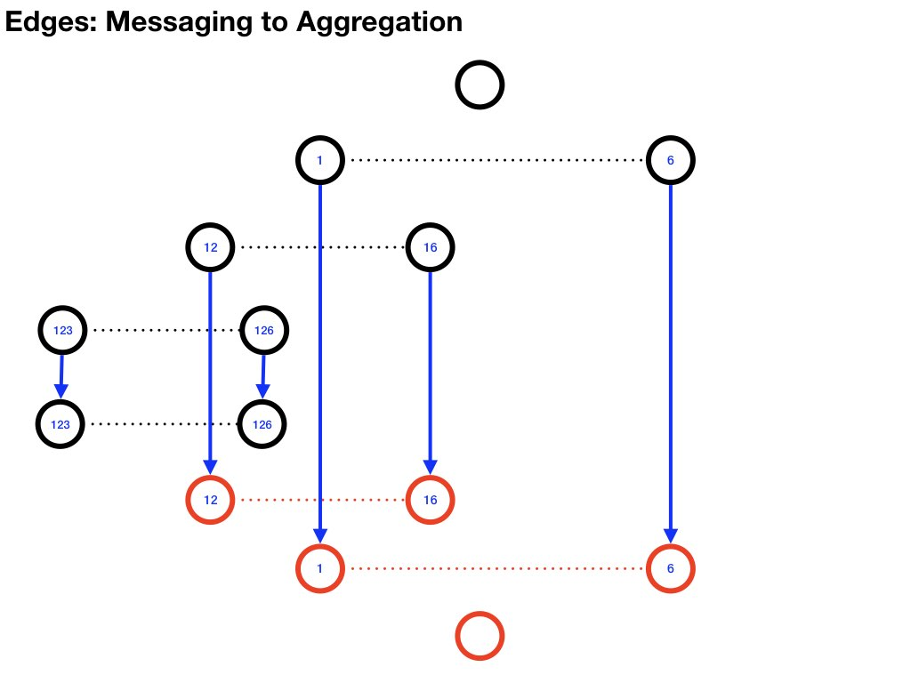
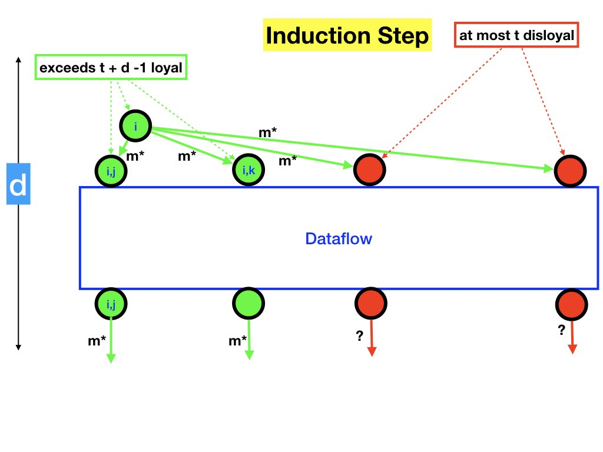

This module describes a Byzantine consensus algorithm in which
messages are not encrypted. An agent x that receives a message signed by
an agent y cannot tell whether y signed the message or
whether some other agent forged y's signature and corrupted the message.
This module describes solutions to the Byzantine problem with oral
messages whereas the previous module studied the problem with written
messages. For convenience we repeat the problem specification next.
A general has \(N\) army units each of which is led by a lieutenant
who may be either loyal or disloyal.
The general may, likewise, be loyal or disloyal.
The general sends a command to
each lieutenant where the command is either attack or retreat.
A loyal general sends the same message to all lieutenants whereas a
disloyal general may send different messages to different lieutenants.
Each
lieutenant decides to attack or retreat at the end of the
algorithm.
If the general is loyal then the decision made by each loyal
lieutenant is the message that the general sent to that
lieutenant. Even if the general is disloyal, all loyal lieutenants
must make the same the decision.
Let \(m[i]\) be the message that the general sends
lieutenant \(i\), and let \(a[i]\) be the decision the lieutenant
\(i\) makes. Let \(m*\) be the message that a loyal general sends to
all lieutenants; so if the general is loyal \(m[i] = m*\) for all
\(i\).
Specification
The specification has two parts:
Validity: Loyal lieutenants must obey a loyal
general.
The oral Byzantine version makes fewer assumptions than the written
version. The assumptions made are as follows:
Synchrony: The algorithm operates in a synchronous fashion in a sequence of
rounds or synchronous steps. If an agent \(x\) does not send
a message to an agent \(y\) in a given round then \(y\) can detect
that \(x\) did not send a message to it in that round.
Reliability: If an agent \(y\) sends a message \(m\) to an agent \(y\) in a given
round then \(z\) receives \(m\) in that round.
Receiver knows sender: An agent that receives a message knows which agent sent it. If an
agent \(z\) receives a message \(m\) from an agent \(y\) in a round
then \(z\) knows that \(y\) sent \(m\) in that round.
Why oral messages are harder
In the written version of the problem, if an agent
\(z\) receives a message \(m\) from any agent where \(m\) is signed by the
general then \(z\) knows that the general did send \(m\).
An agent cannot forge the general's signature and send a false
message.
By contrast, in the oral, or unencrypted version, any agent can
forge any agent's signature and send corrupted messages.
Bounds
Throughout this module \(t\) is an upper bound on the number of
disloyal agents. We will show later that there is no solution when
the the number of loyal agents is less than or equal to \(2t\). Next
we describe an algorithm in which there are more than \(2t\)
non-faulty agents. So the total number of agents is at least \(3t +
1\) agents.
Algorithm
Messages in the algorithm are either attack or retreat
messages. If an agent \(x\) does not receive a message from an agent
\(y\) on a round then \(x\) treats the absence of the message from
\(y\) in the same way as if \(x\) received a retreat message
from \(y\). So, the algorithm only deals with attack and
retreat messages and does not deal with steps that an agent
takes if it does not receive a message.
We describe the flow of data in the algorithm after defining the
algorithm. Studying dataflow is very helpful in understanding this
tricky algorithm.
The algorithm is defined recursively. We define an algorithm \(B(k)\)
for nonnegative integers \(k\) as follows.
Base Case. \(k = 0\)
Each lieutenant sets its value to the message that the lieutenant
receives from the general.
Inductive Step
For \(k > 0\), we define algorithm \(B(k)\) as follows. The algorithm
computes a decision \(a[j]\) for each loyal lieutenant \(j\).
Step 0: The general sends command \(m[i]\) to lieutenant \(i\), for each
lieutenant. If the general is loyal, then the general sends the same
message, \(m*\), to all agents, and therefore \(m[i] = m*\) for all
\(i\). If the general is disloyal then the messages, \(m[i]\), are
arbitrary.
The general plays no further part in the algorithm.
Step 1 - Messaging: Each lieutenant \(i\) acts as a general for a new Byzantine generals
(oral version) problem. The lieutenants in this new problem (with
\(i\) as general) are the
lieutenants in the original problem other than \(i\) itself.
Lieutenant \(i\), acting as a general, sends command \(m[i,j]\) to
lieutenant \(j\).
If lieutenant \(i\) is loyal then \(m[i, j] = m[i]\), for all \(j
\neq i\). If \(i\) is disloyal then \(m[i,j]\) are arbitrary.
Step 2 - Aggregation:
Let \(a[i, j]\) be the value that agent \(j\) decides on step 1 of
the algorithm in which agent \(i\) acts as the general, and \(j\) is
a lieutenant.
A loyal agent \(i\)'s
decision, \(a[i]\), for the original problem is the
majority of \(a[j, i]\), all \(j\), with \(a[i, i]\) set to
\(m[i]\).
A disloyal agent \(i\) sets \(a[i]\) to an arbitrary value.
Looking at the flow of data in the algorithm is helpful, and we do so next.
Data Flow Graph
Referring to the following example of a data flow graph can be helpful
as you read the next paragraphs.

Fig.1: A Data Flow Graph
Vertices
We assume that the \(N\) agents have ids \(0, \ldots N-1\), where
agent \(0\) is the general. The data flow graph has two parts:
messaging and aggregation.
In the diagram, messaging vertices and edges are black, aggregation
vertices and edges are red, and edges from messaging to aggregation
vertices are blue.
Both the messaging and aggregation parts are structured in
layers where there is a vertex in layer \(k\) for every sequence of
\(k\) lieutenant ids, and where in each sequence each lieutenant appears at
most once. For example, when there are \(3\)
lieutenants, layer \(2\) has vertices corresponding to all sequences
of 2 distinct values chosen from \(\{1, 2, 3\}\), i.e.
\([1, 2], [1, 3], [2, 1], [2, 3], [3, 1], [3, 2]\)
The messaging and aggregation parts have the same number of layers. To
disambiguate the parts
the vertices in the messaging and aggregation parts are identified
with prefixes msg and agr, respectively. For instance,
\(msg[1, 2]\) and \(agr[1, 2]\) are vertices at level 2 in the
messaging and aggregation phases, respectively.
The lowest or sink vertex, \(agr[]\) plays no part in the algorithm
and is included merely for symmetry.
Edges
Message Edges:
Let \(x_{i}\) be the id of a lieutenant for all \(i\).
There is exactly one edge to a vertex \(msg[x_{0}, \ldots, x_{k}]\)
for \(k > 0\),
and that edge is from vertex \(msg[x_{0}, \ldots, x_{k-1}]\).
For example, there is exactly one edge to \(msg[1, 2, 3]\), and that
edge is from \(msg[1, 2]\).
Aggregation Edges:
There is exactly one edge from a vertex \(agr[x_{0}, \ldots, x_{k}]\)
for \(k > 1\),
and that edge is to vertex \(agr[x_{0}, \ldots, x_{k-2}, x_{k}]\).
There is exactly one edge from \(agr[x_{0}, x_{1}]\) and that edge is
to \(agr[x_{1}]\).
For instance there is exactly one edge from \(agr[1, 2, 3]\), and that
edge is to \(agr[1, 3]\). And there is exactly one edge from \(agr[1, 3]\), and that
edge is to \(agr[3]\).
Edges from Messaging to Aggregation:
There is an edge from each vertex \(msg[x_{0}, \ldots, x_{k}]\) to
\(agr[x_{0}, \ldots, x_{k}]\).
For example, there is an edge from \(msg[1, 2, 3]\) to \(agr[1, 2, 3]\).
Let's look at data flow for the case of 1 disloyal and 3 loyal
agents. In the first example lieutenant 3 is disloyal and in the
second example the general is disloyal.
Example: Non-Faulty General, 1 Faulty
Lieutenant
This example has a non-faulty general, 1 faulty lieutenant (agent \(3\)) and 2
non-faulty lieutenants (agents \(1\) and \(2\)). The diagram below
shows the data flow where data equal to the the message, \(m*\), sent by the general is
shown as green lines and unknown data is shown in black dotted lines.

Fig.2: Dataflow graph with 4 agents, non-faulty
general
The output of node \(a[0, 1]\) is the majority of \(m[0,1], a[2,1],
a[3,1]\), which is the majority of \(m*, m*, a[3,1]\), which is
\(m*\). By the same argument \(a[0, 2] = m*\). So, the loyal
lieutenants obey the loyal general.
Example: Faulty General, No Faulty
Lieutenants
The faulty general may send different messages to different
lieutenants. Here we show the messages that the general sends to
lieutenants 1, 2, and 3 as edges colored black, blue and green, where
these colors signify unknown values.
Fig.3: Dataflow graph with 4 agents, Faulty
general
The aggregation steps at each of the nodes \(a[0,1], a[0,2], a[0,3]\)
computes the majority of identical input edges --- one black, one
blue, and one green edge. So, the outputs of these nodes are identical,
and therefore all three lieutenants decide identical actions (shown
as magenta-colored edges).
Example: Dataflow with 7 agents
Skip this example if the dataflow graph is clear.
The next diagrams show dataflow of the messaging tree, edges from
messaging to aggregation trees, and edges of the aggregation
tree. There are too many vertices to show all of them. So, we show
only some of the vertices, and we show three diagrams with separate
edges for messaging, aggregation, and messaging to aggregation.

Fig.4: Messaging Dataflow Tree
Fig.5: Edges in Aggregation Dataflow Trees

Fig.6: Edges Messaging to Aggregation Dataflow
Exercise
As an exercise, determine the data flowing along the edges of the
dataflow graph for two cases:
Non-faulty general: agents 0, 1, 2, 3, 4 are non-faulty and
agents 5, 6 are faulty.
Faulty general: agents 1, 2, 3, 4, 5 are non-faulty and
agents 0, 6 are faulty.
Specification in Terms of Dataflow
Validity
We use the following equivalent definition of validity.
The proof that the algorithm is correct has two parts. The first part
deals only with validity, i.e., assume that the general is loyal. The
second part deals with consensus as well as validity.
We define the degree of a dataflow graph as one less than the number of
layers in the messaging part. (Equivalently, the degree is one less
than the number of layers in the aggregation part.) For instance, the
degree of the graph of figure 1 is 1.
Lemma: Validity
Algorithm \(B(d)\) satisfies validity if there are more than \(d + t\)
loyal agents and at most \(t\) disloyal agents.
In terms of dataflow, the lemma states that
a dataflow graph of degree \(d\) satisfies validity if the number of
non-faulty agents exceeds \(t + d\) and the number of faulty agents is
at most \(t\).
The idea of the lemma is shown in the diagram in which loyal agents
are shown in green and disloyal agents in red. The illustration has
loyal agents to the left and disloyal ones to the right. The general
sends the same message \(m*\) to all lieutenants.
If the condition of the lemma are satisfied then the outputs of the
loyal agents are also \(m*\). The edges between level 1
message vertices and level 1 aggregation vertices are in the box
labeled "dataflow".
Fig.7: Lemma about non-faulty general
Proof
The proof is by induction.
Base Case
In a degree
\(0\) graph, each aggregation vertex is connected directly to its
corresponding message vertex. There are no connections between vertices
of loyal and disloyal agents.
Fig.8: Base Case - degree 0 graph
Therefore:
Assume that the lemma holds for dataflow graphs of degree less than \(d\) and
prove that the lemma holds for graphs of degree \(d \).

Fig.9: Lemma - induction step
We first show that
\(a[i,j] = m*\) for all loyal \(i, j\).
Consider any loyal lieutenant \(i\) in the graph of degree \(d\).
Let \(G\) be the subgraph consisting of all edges and vertices
from message vertex \([i]\) up to aggregation vertices \([i, j]\) for
all \(j\). Then,
\(G\) has degree \(d-1\).
The number of loyal agents in \(G\) exceeds \(t + d - 1\)
because the number of loyal agents in the degree-\(d\) graph exceeds
\(t + d\).
Because \(i\) is loyal, \(m[i,j] = m*\) for all \(j\).
Because \(G\) has degree \(d-1\), and the number of loyal agents in
\(G\) exceeds \(t + d - 1\), and \(i\) is loyal,
the induction hypothesis holds for \(G\).
From the induction hypothesis
\(a[i, j] = m[i, j] = m*\) for all loyal \(j\).
Next, we show that \(a[i] = m*\) for all loyal \(i\).
Because \(i\) is loyal, \(m[i] = m*\).
We proved that \(a[j, i] = m*\) for all loyal \(i, j\). Therefore the
majority is taken over more than \(t + d - 1\) values which are equal
to \(m*\). There are at most \(t\) disloyal agents and therefore the
majority is taken over at
most \(t\) values other than \(m*\). Because \(d \geq 1\), the
majority is taken over more \(m*\) values than non-\(m*\) values.
Therefore, \(a[i] = m*\).
Theorem
The algorithm satisfies its specifications if the number of loyal
agents exceeds twice the number of disloyal agents.
Equivalantly, the algorithm satisfies its specifications if the total
number of agents is at least \(3.t + 1\).
Proof
The proof is by induction.
Base Case \(t = 0\)
The base case has no faulty agents, and so the algorithm obviously satisfies its
specification.
Induction Step
Assume that the theorem holds for \(t < d\) and prove that theorem
holds when \(t = d\).
Validity
The dataflow graph has degree \(d\), and there are more than \(2d\)
loyal agents and at most \(d\) disloyal agents. Therefore the conditions
of the lemma are satisfied and the result follows.
Consensus
Let \(i\) be an agent which may be loyal or disloyal.
From the induction hypothesis, the problem with \(i\) as the general satisfies
the specification and so satisfies consensus. Therefore
For all loyal \(j, k\) and \(i \notin \{j, k\}\):
\(
a[i, j] = a[i, k]
\)
Because \(j, k\) are loyal \(a[j, k] = m[j]\), and \(a[k, j] = m[k]\).
Therefore, the majorities are taken over identical values and are
therefore identical.
So \(a[j] = a[k]\).
OLD
OLD
OLD
and there are more than \(t + d - 2\)
non-faulty \(i\) different from \(0, j\), the majority is taken over
more than \(t + d - 1\) values equal to \(m*\). There are at most
\(t\) faulty values. Therefore, the majority is taken over more \(m*\) values
than non \(m*\) values, and the result follows:
\(
\forall j \in good: a[0, j] = m*
\)
OLD
Phase 2: Aggregation
Each agent carries out steps in the aggregation phase; these steps are
also represented as a tree. The figure below shows which messages, sent
in the message-sending phase, are used by agent 1 in the aggregation
phase. The diagrams for the other agents are identical.
Fig.7: Messages used by Agent 1 in Aggregation Phase
Agent \(j\), where \(j \neq 0\) receives 2 messages \(m[0, i, j]\)
for \(j \neq i\) and \(j \neq 0\). Agent \(j\) also receives
\(m[0, j]\) on round 0. For example, agent 1 receives
\(m[0, 2, 1]\) and \(m[0, 3, 1]\) on round 1 and \(m[0, 1]\) on
round 1.
Agent \(j\)'s sets its value to the majority of the 3 messages that it
receives. For example, agent 1's sets its value to the majority of
\(m[0, 1], m[0, 2, 1], m[0, 3, 1]\).
We will show that (1) if agent 0 is non-faulty then non-faulty agents set
their values to the messages that agent 0 sends, and (2) all
non-faulty agents set identical values even if agent 0 is faulty.
Case: Faulty General
The general sends arbitrary messages, and so \(m[0, i]\) is
arbitrary. Because the lieutenants are non-faulty they transmit the
messages in round 1 that they received from the general in round 0.
\( \forall i \notin \{0\}, j \notin \{0, i\}: \quad m[0, i, j] = m[0, i]\)
For example, agent 1 receives \(m[0, 2, 1]\) and \(m[0, 3, 1]\) in
round 1. These messages
are the same as \(m[0, 2]\) and \(m[0, 3]\), respectively. So, agent 1
takes the majority of
\(
m[0, 1], m[0, 2], m[0, 3]
\)
and agents 2 and 3 take the majority of an identical set of messages. Thus,
agents 1, 2, 3 determine identical values.
Case: Non-Faulty General
Assume, without loss of generality, that agent 3 is faulty and that
agents 0, 1 and 2 are non-faulty. Let the message that the general
(agent 0) sends be v*. Then:
\(
m[0, 1] = m[0, 2] = m[0, 3] = v*
\)
Agent 1 takes the majority of
\(
m[0, 1], m[0, 2, 1], m[0, 3, 1]
\)
which is the same as:
and the majority is \(v*\) independent of the value of \(m[0, 3, 1]\).
Likewise, agent 2 determines value v*, and so non-faulty lieutenants
obey the general.
Two faulty agents
The system must have at least 5 non-faulty agents for the algorithm to
work.
Message-Sending Phase
The algorithm has 3 rounds of message-sending.
Round 0: Agent 0 sends \(m[0, i]\) to all \(i \notin \{0\} \)
Round 1: Agent \(i\), for \(i \notin \{0\} \), sends \(m[0, i, j ]\) to all \(j \notin \{0, i\}\)
Round 2: Agent \(j\), for \(j \notin \{0, i\} \), sends \(m[0, i, j,
k]\) to all \(k \notin \{0, i, j\}\)
Messages are shown in a tree in the diagram below.
Fig.6: Messages Sent
Aggregation Phase
Aggregation steps are also represented by a tree, with agent \(i\)
determining values at node \(0, i\) in level 1, \(0, j, i\) in level
2,
Aggregation proceeds from the leaves of the tree towards the root.
Example of Phase 1
Let's look at the messages in a problem with \(g = 0\),
\(L = \{1, \ldots, 6\}\), and \(t = 2\)
The general - agent \(0\) - sends messages \(m(0,j)\) to each lieutenant
\(j\). This is shown in the rooted tree in the diagram below
with \(0\) as the root and the edges labeled with the messages that
are sent.
Fig.6: Messages Sent
A loyal general broadcasts the same message to every lieutenant. If
agent \(0\)
is loyal, let \(m(0)\) be the message that the general broadcasts.
So, if agent \(0\) is loyal then \(m(0,j) = m(0)\) for all \(j\).
If, however, agent \(0\) is disloyal then \(m(0,j)\) is arbitrary.
Fig.6: Messages Sent
Let \(m(0,1,j)\) be the message that agent \(1\) sends to agent \(j\),
for \(j \in \{2 \ldots, 6\}\) for the problem in which \(g = 1\),
\(L=\{2 \ldots, 6\}\),
and \(t=1\).
If agent \(1\) is loyal, then \(m(0,1,j) = m(0,1)\)
The diagram
also shows the messages \(m(0,1,2,j)\) that agent \(2\) sends to agent \(j\),
in the algorithm when \(g=2\), \(L=\{3 \ldots, 6\}\), and \(t=0\).
If
agent \(2\) is loyal, then
\(m(0,1,2,j) = m(0,1,2)\), for all \(j\).
Example: Agents 5, 6 are disloyal
Let \(m(0)\) be the message that the loyal general -- agent \(0\) --
broadcasts.Then:
\(m(0,i) = m(0)\)
\(m(0,i,j) = m(0)\) for loyal \(i\), i.e., for
\(1 \leq i \leq 4\)
\(m(0,i,j) \;\) is arbitrary for disloyal \(i\), i.e. \(i = 5, 6\)
\(m(0,i,j,k) = m(0)\) for loyal \(i, j\), i.e. for \(1
\leq i,j \leq 4\).
\(m(0,i,j,k) \;\) is arbitrary for for disloyal \(i\) or \(j\), i.e. \(5
\leq i \leq 6\) or \(5 \leq j \leq 6\)
Note: These messages are defined only when the subscripts, \(0, i, j,
k\) are distinct.
Example: Agents 0, 1 are disloyal
\(m(0,i) = \;\) is arbitrary.
\(m(0,i,j) = m(0,i)\) for loyal \(i\), i.e., for
\(2 \leq i \leq 6\)
\(m(0,1,j) = \;\) is arbitrary.
\(m(0,i,j,k) = m(0,i,j) \) for loyal \(j\), i.e. for \(2
\leq j \leq 6\).
\(m(0,i,1,k) \;\) is arbitrary because agent \(1\) is disloyal.
Step 3. Aggregate results of recursive calls
Each node of the tree in the diagram represents messages sent in a Byanztine generals
problem. Let
\(P(0,i_{1}, i_{2}, \ldots, i_{r})\) be the problem in
which agent \(i_{r}\) sends messages \(m(0,i_{1}, i_{2}, \ldots,
i_{r},j)\) to agents \(j\).
Example
In the diagram with \(N=7\) agents in total, with at most \(t=2\) of the 7 being
faulty, there is:
A single problem \(P(0)\). For this problem \(t=2\). In this
problem, agent \(0\) sends message \(m(0,i)\) to agent \(i\) for
\(i = 1, \ldots 6\).
\(N-1 = 6\) problems \(P(0,i)\). For these problems \(t=1\). In
problem \(P(0,i)\), agent \(i\) sends message \(m(0,i,j)\) to
agent \(j\), where \(j\) is different from \(0\) and \(i\).
\((N-1) \times (N-2) = 30\) problems \(P(0,i,j)\). For these problems \(t=0\). In
problem \(P(0,i,j)\), agent \(j\) sends message \(m(0,i,j,k)\) to
agent \(k\), where \(k\) is different from \(0\), \(i\) and \(j\).
Aggregating results
Let
\(c_{l}(0, i_{1}, \ldots, i_{r})\)
be the consensus value
reached by a loyal agent \(l\) for the problem \(P(0, i_{1}, \ldots,
i_{r})\) where
\(l\) is different from \(0, i_{1}, \ldots, i_{r}\).
We will show that the \(c_{l}\) satisfy the specification:
Validity:
If agent \(i_{r}\) is loyal then this value is the message that
\(i_{r}\) sent to \(l\),
The majority is taken over the message \(m(0, i_{1}, \ldots,
i_{r},l)\) that agent \(l\) received from agent \(i_{r}\) and the
consensus values \(c_{l}(P(0, i_{1}, \ldots, i_{r},j))\) that agent
\(l\) computes for problem \(P(0, i_{1}, \ldots, i_{r},j)\).
Example
Let's compute consensus values for the case of 7 agents indexed \(0,
\ldots, 6\), where agents \(0, \ldots, 4\) are loyal and agents \(5,
6\) are disloyal. Let \(m(0)\) be the message that agent \(0\)
broadcasts. Then for all loyal \(i, j, k\):
\(
m(0) = m(0,i) = m(0,i,j) = m(0,i,j, k)
\)
Let's compute \(c_{3}(0,1,2)\)
\(c_{3}(0,1,2)\) is the consensus value that agent \(3\) computes for
the problem in which
agent \(2\) sends message \(m(0,1,2,j)\) to agent \(j\) for \(j = 3,
4, 5, 6\). This corresponds to the problem at the top right in the
diagram.
\(t = 0\) for this problem. So
\(c_{3}(0,1,2) = m(0,1,2,3)\).
By the same argument, for loyal
\(i, j, k\):
\(c_{k}(0,i,j) = m(0, i, j, k)\)
Because \(m(0, i, j, k) = m(0, i, j)\), for all loyal \(k\):
\(
c_{k}(0,i,j) = m(0, i, j)
\)
and so the
\(c_{k}(0,i,j)\) satisfies the validity and consensus requirements of
the specification for problem \(P(0,i,j)\).
Does the solution satisfy the specification for
all problems \(P(i_{0}, \ldots, i_{r})\)
To satisfy consensus for problem \(P(0, 1, 5)\), we must have \(c_{2}(0,
1, 5) = c_{3}(0, 1, 5)\); but that may false because \(m(0, 1, 5, 2)\) may be
different from \(m(0, 1, 5, 3)\) because agent \(5\) is disloyal.
So, the algorithm does not satisfy the specification for all problems
\(P(i_{0}, \ldots, i_{r})\). It does, however, satisfy the
specification for problems in which the number of loyal agents exceeds
twice the number of disloyal ones.
The problem \(P(0, 1, 5)\) has 2 disloyal agents (5 and 6) -- and 3
loyal agents (2, 3, 4); and so this problem does not satisfy the
criterion that the number of loyal agents exceeds twice the number of
disloyal ones.
Example
Let's look at an example in which agents \(0\), \(1\) are disloyal and
agents \(2, \ldots, 6\) are loyal. From the arguments in the previous
example, for loyal \(j,k\), i.e., for \(j, k \in 2, \ldots, 6\):
By the same argument, for all loyal \(j\):
\(
c_{j}(0, 1) = \textrm{majority} \;
m(0, 1, 2), \ldots, m(0, 1, 6)
\)
So, the \(c_{j}(0, 1)\) all \(j\) satisfy the specification for
problem \(P(0,1)\). By the same argument we can show that
\(c_{i}(0)\) all \(i\) satisfy the specification for
problem \(P(0)\).
Proof of Correctness
We set \(i_{0} = 0\) and
first prove that the algorithm is correct for problem
\(P(i_{0}, i_{1}, \ldots, i_{r})\) when agent \(i_{r}\) is loyal, and
later consider the case when \(i_{r}\) is disloyal. We will show that
when \(i_{r}\) is loyal, the consensus computed by all loyal agents
\(l\) is the message \(m(i_{0}, \ldots, i_{r})\) that
that \(i_{r}\) broadcast.
The proof is by induction.
Base case: We prove the
algorithm for problems at the leaves of the tree, i.e. for problems:
\(P(0, i_{1}, \ldots, i_{t})\).
For the induction step, we assume that the algorithm is correct
for problems at depth \(k\) in the tree, and then prove that the
algorithm is correct for problems at depth \(k-1\), i.e.,
we assume that the solution is correct for all
problems \(P(i_{0}\), for \(i_{k}\) and prove that the
algorithm is correct for problems \(P(i_{0}, i_{1}, \ldots,
i_{k-1})\).
Base case: Leaf of the Tree:
Problems \(P(i_{0}, i_{1}, \ldots, i_{t})\)
There are at least \(2.t + 1\) loyal agents in the system. So,
there are at least \(t\)
loyal lieutenants and at most \(t\)
disloyal lieutenants
in problem \(P(i_{0}, \ldots, i_{t})\).
\(c_{j}(i_{0}, \ldots, i_{t})\) is the majority of messages \(m
(i_{0}, \ldots, i_{t}, k, j)\) for all \(k\) not in \(i_{0},
\ldots, i_{t}, j\), and the message \(m(i_{0}, \ldots,
i_{t}, j)\).
Because \(i_{t}\) is loyal, \(m(i_{0}, \ldots, i_{t}, j) = m(i_{0},
\ldots, i_{t})\) for all loyal \(j\). Therefore the majority is taken
over at least \(t+1\) messages with value \(m(i_{0}, \ldots, i_{t})\).
These \(t+1\) or more messages form a majority regardless of the
values of the \(t\) disloyal agents. So, for loyal \(i_{t}, j\):
\(c_{j}(i_{0}, \ldots, i_{k})\) is the majority of messages \(c_{j}
(i_{0}, \ldots, i_{k}, l)\) for all \(l\) not in \(i_{0},
\ldots, i_{k}, j\), and the message \(m(i_{0}, \ldots,
i_{k}, j\).
From the assumption of the induction step, for loyal \(j\):
Because \(i_{k}\) is loyal:
\(
m(i_{0}, \ldots, i_{k}, l) =
m(i_{0}, \ldots, i_{k})
\)
Therefore the majority is taken over at least \(t+1\) loyal agents
\(j\) each of which computes the common consensus value of
\(m(i_{0}, \ldots, i_{k})\), and these values out-votes values of disloyal
agents. Therefore, for loyal \(i_{k}, j\):
We will prove that all loyal lieutenants come to the same consensus
when the general is disloyal.
In every problem \(P(i_{0}, \ldots, i_{t})\), at least one of the
agents \(i_{k}\) is loyal because there are at most \(t\) disloyal agents.
Let's consider the truncated
tree in which leaves represent problems \(P(i_{0}, \ldots, i_{r})\) where
agents \(i_{0}, \ldots, i_{r-1}\) are disloyal and agent \(i_{r}\) is
loyal.
We showed that the algorithm is correct for problem \(P(i_{0}, \ldots,
i_{r})\) if agent \(i_{r}\) is loyal.
Therefore the algorithm is correct for every leaf of the truncated
tree. We will now prove by induction on the depth of the truncated
tree that the algorithm is correct for all nodes at all depths, i.e.,
consensus holds: For all loyal agents \(k, l\):
\(
c_{k}(i_{0}, \ldots i_{r}, j) = c_{l}(i_{0}, \ldots i_{r}, j)
\), for \(j \notin \{k, l\}\). Follows from the induction hypothesis.
\(
c_{k}(i_{0}, \ldots i_{r}, l) = m(i_{0}, \ldots i_{r}, l)
\) and
\(
c_{l}(i_{0}, \ldots i_{r}, k) = m(i_{0}, \ldots i_{r}, k)
\)
because agents \(k, l\) are loyal.
Review
Assume that you are explaining the algorithm to someone who hasn't
taken a course on distributed computing. The Byzantine consensus
algorithm with written messages works with any number of loyal and
disloyal officers; however, the algorithm with oral messages works
only if the number of loyal officers exceeds twice the number of
disloyal ones. Explain why this is.
Draw a tree of messages for the case where the general is faulty,
and one lieutenant is faulty, and there are 5 loyal lieutenants. See
how the correctness of the algorithm is reflected in the tree.
Draw a tree of messages for the case where the general is faulty,
and one lieutenant is faulty, and there are only 4 loyal
lieutenants. Show what can go wrong.
K. Mani Chandy,
Emeritus Simon Ramo Professor,
California Institute of Technology